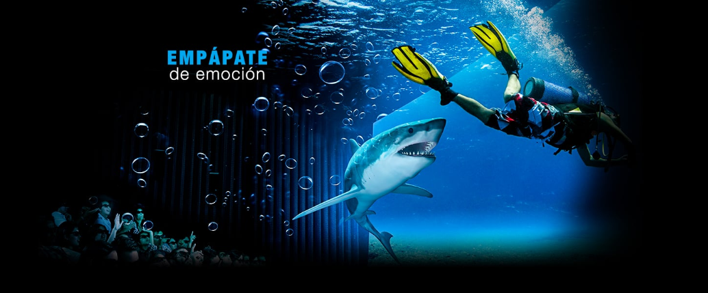
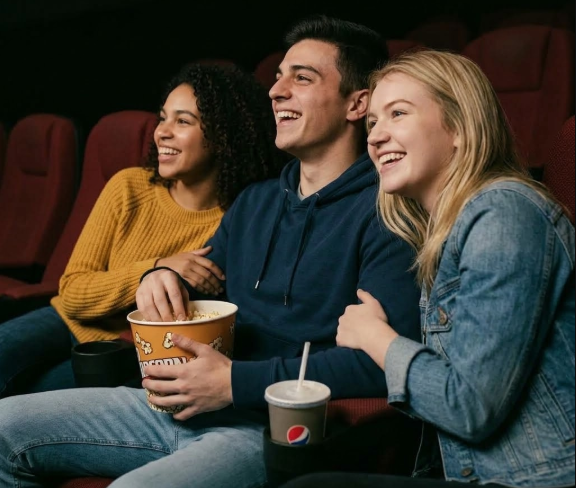

Nosotros

Nuestra Historia
Como amantes del cine, nos encanta descubrir nuevas experiencias y encontrar las mejores opciones al mejor precio. Sin embargo, cuando queríamos ver una película, el proceso de buscar funciones, comparar precios, revisar formatos y encontrar un buen lugar podía hacerse largo y tedioso. La información estaba repartida entre distintas plataformas, páginas y establecimientos. Al final, pasábamos más tiempo buscando que disfrutando.
Por eso creamos Kinoura: un espacio que reúne todo lo relacionado con una salida al cine, para que encontrar, comparar y elegir sea mucho más sencillo.
Porque elegir qué ver debería ser parte de la diversión, no una tarea.

Nuestra Misión
Hacer que disfrutar del cine sea más fácil, desde el momento en que empiezas a buscar.
En Kinoura reunimos en un solo lugar las opciones que forman parte de una experiencia de cine: películas, funciones, precios, formatos, dulcería, merchandising y mucho más.
Queremos que puedas descubrir, comparar y elegir sin tener que saltar entre diferentes plataformas.
Menos tiempo buscando. Más tiempo disfrutando.
Nuestro Equipo
Arley Gutarra
Fundador / Desarrollo
Apasionado por el cine y la tecnología. Se encarga de convertir las ideas de Kinoura en una experiencia sencilla y funcional.

Camila Espíritu
Diseño y Experiencia
Amante del diseño y los detalles. Trabaja para que cada parte de Kinoura sea intuitiva, agradable y fácil de usar.

Contenido y Operaciones
Curiosa por naturaleza y siempre buscando nuevas experiencias. Se encarga de organizar el contenido y mantener Kinoura útil y actualizado.